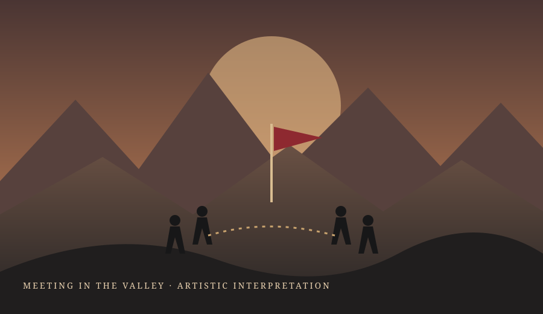

1934.10
中央红军
从中央革命根据地出发
1934年10月中旬，中共中央、中革军委机关由瑞金向集结地于都开进，中央红军主力开始战略转移。10月中旬，中央红军从于都东门等渡口踏上长征路。
查看中央党史和文献研究院资料 ↗A CHRONICLE OF COURAGE
沿着关键时间坐标，理解不同部队交织而行的历史进程。
把时间还给历史
长征不是所有部队在同一天出发、沿同一条路线行进的单一事件。不同部队从不同根据地出发，经历各自的行军与会合，最终实现三大主力红军会师。
1934年10月中旬，中共中央、中革军委机关由瑞金向集结地于都开进，中央红军主力开始战略转移。10月中旬，中央红军从于都东门等渡口踏上长征路。
查看中央党史和文献研究院资料 ↗1月15日至17日，中共中央政治局在贵州遵义召开扩大会议，集中解决当时具有决定意义的军事和组织问题。这次会议成为中国革命史上具有重大转折意义的重要会议。
阅读会议史料解读 ↗
10月9日，红一、红四方面军在甘肃会宁会师；10月22日，红一、红二方面军在将台堡会师。至此，三大主力红军胜利会师。
核对会师时间与地点 ↗此时间轴选取不同部队的代表性节点，不意味着所有部队经历完全相同。长征起止时间、路线里程和会师节点应按具体部队分别说明。